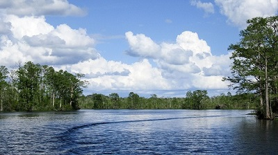

Tyrrell County, North Carolina
We are the natural buffer zone between the urban mainland and the tourist Outer Banks of North Carolina. The red wolf howls from this location. Northern harriers and bald eagles soar across the sunset. Near the historic pocosin woodlands, American alligators reach their northern limit. Palmetto-Peartree Preserve, Emily and Richardson Preyer Buckridge Coastal Preserve, Pocosin Lake National Wildlife Refuge, and the bayside Eastern 4-H Environmental Education Conference Center are among conservation gems in Tyrrell County.